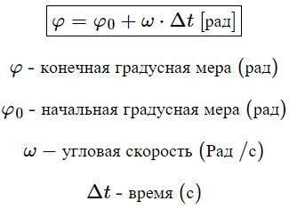
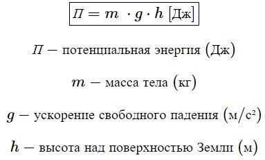

Теоретический минимум за 9 класс
2-e полугодие
Равномерное движение
1. Средняя скорость
2. Среднепутевая скорость
3. Зависимость координат от времени при равномерном движении
Равноускоренное движение
4. Ускорение
5. Зависимость координат от времени
6. Зависимость скорости от времени
7. Формула перемещения без времени
8. Формула перемещения без ускорения
Равномерное движение по окружности
9. Угловая скорость
10. Угловое ускорение

11. Зависимость угла от времени

12. Зависимость угловой скорости от времени
13. Связь между линейной и угловой скоростью

14. Связь центростремительного ускорения и угловой скорости

Динамика
15. Сила тяжести
16. Закон Гука
17. Сила трения скольжения
18. Сила всемирного гравитационного притяжения
Законы сохранения
19. Работа
20. Мощность
21. Теорема о кинетической энергии
22. Кинетическая энергия
23. Потенциальная энергия вблизи поверхности Земли
